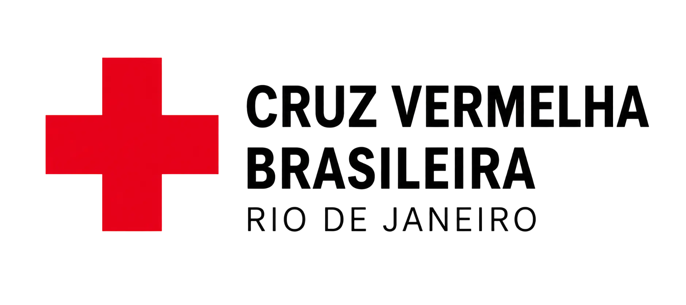

Escola Digital CVB-RJ
Como a plataforma online se liga ao site da escola, e três direções de visual para ela. A marca (vermelho da Cruz Vermelha, logotipo, fontes Archivo e Instrument Sans) continua; muda o jeito de apresentar. Conteúdo de exemplo, ilustrativo.
1Como o site e a Escola Digital se ligam
Uma conta só. O site da escola continua sendo a porta de entrada (anúncio, catálogo, cadastro); a Escola Digital é onde o aluno estuda. Os dois rodam no mesmo sistema e no mesmo banco de dados, então não existe segundo cadastro nem segunda senha.
Site da escola
escola…/ (o de hoje)
- Botão Escola Digital no cabeçalho
- Faixa na página inicial: "Estude online, no seu ritmo"
- No catálogo, os cursos online com o selo Online
- Cadastro e login de sempre
→
Escola Digital
escola…/digital
- Visual próprio (uma das opções abaixo)
- Vitrine dos cursos online, página de cada curso, matrícula e pagamento
- Área de estudo: módulos, telas, testes, cenários
- Certificado e cartão de bolso
- Link "Site da escola" para voltar
↔
Minha conta
escola…/minha-conta
- Lista presencial e online juntos
- No curso online: progresso e botão Ir para a Escola Digital
- Dentro da Escola Digital, o menu "Conta" leva para cá
Por que no endereço /digital e não num subdomínio (tipo digital.cruzvermelhariodejaneiro.org): no mesmo endereço o login vale nos dois lados sem mexer em cookies, não precisa configurar domínio novo no Render nem certificado, e localmente funciona direto em localhost:3000/digital. Se depois quiserem um endereço próprio para divulgação, dá para apontar um subdomínio para lá sem mudar nada da plataforma.
Como aparece no site da escola
Cruz Vermelha Brasileira · Filial do Estado do Rio de Janeiro

InícioComo funcionaQuem somosEscola Digital
Escola Digital CVB-RJPrimeiros socorros online, no celular, no seu ritmo. Com certificado.
Conhecer →
OnlinePrimeiros Socorros — Lei LucasR$ 79,90 · comece hoje
PresencialPunção Venosainício em 05/12
PresencialBombeiro Civilturmas em breve
2Três direções de visual para a Escola Digital
As três usam a marca da Cruz Vermelha; o que muda é a personalidade. Cada uma mostra a mesma coisa: a tela inicial do aluno e uma tela de aula, no celular (onde o público vai estudar).
A
App claro
Parece um aplicativo de celular: fundo branco, cards com sombra suave, menu de abas embaixo, o vermelho concentrado no que importa (o "continuar" e os alertas). Azul-marinho do site como cor de apoio.
A favor- O mais fácil de ler para quem não tem costume com curso online
- Familiar: parece os apps que a pessoa já usa
Contra- Menos marcante: pode parecer "mais um app de curso"
Início do aluno
Olá, Ana
Você estudou 18 min esta semana.
Continue de onde parouPrimeiros Socorros — Lei Lucas
Módulo 4 · Engasgo · Criança no recreio
38% · acesso até 27/10/2027Continuar▶
Módulos
✓Antes de tudoConcluído · 20 min
✓Parada cardíaca no adultoJá sabia (pré-teste)
4EngasgoEm andamento · restam 12 min
🔒Mal súbitoLibera depois do 4
⌂Início▤Cursos🎓Certificados☺Conta
Tela de aula
‹
Módulo 4 · Engasgo · tela 2 de 3
Criança no recreio
SituaçãoRevisãoAlertaTeste
Uma criança de 6 anos para de rir, leva as mãos ao pescoço e não consegue falar. Ela ainda está respirando?
1
Mãos no pescoço: sinal universal.
2
Tosse forte → leve. Incentive.
ALERTASe a criança tosse com força, não bata nas costas.
Próximo: Teste rápido→
B
Foco escuro
Fundo escuro, o vídeo como protagonista, módulos em "prateleiras" como numa plataforma de streaming. Passa a sensação de produto premium e deixa o vídeo e as fotos brilharem.
A favor- Bonito e moderno; valoriza vídeo e foto
- Bem diferente do site: fica claro que é "outro lugar"
Contra- Texto longo em fundo escuro cansa mais, e o curso tem bastante leitura
- Na rua, com sol, a tela escura é pior de ler
Início do aluno
Continue · Módulo 4Engasgo: criança no recreio
▶ Continuar Primeiros Socorros — Lei Lucas 38%
Próximos trancados
⌂Início▤Cursos🎓Certificados☺Conta
Tela de aula
Módulo 4 · tela 2 de 3
Criança no recreio
Uma criança de 6 anos para de rir, leva as mãos ao pescoço e não consegue falar. Ela ainda está respirando?
1
Mãos no pescoço: sinal universal.
2
Tosse forte → leve. Incentive.
ALERTASe a criança tosse com força, não bata nas costas.
Próximo: Teste rápido→
C
Manual de campo
Inspirado no cartão de bolso e nos manuais de socorro: papel claro, linhas pretas firmes, números grandes, carimbos de status, o lema OLHAR · LIGAR · CUIDAR sempre à vista. Vermelho e preto, como sinalização de emergência.
A favor- Tem identidade própria: não parece nenhum outro curso online
- Conversa com o cartão de bolso e com o lema; o aluno reconhece o material impresso
- Muito contraste: boa leitura no sol
Contra- Mais "editorial": exige cuidado para não ficar pesado
- Carimbos e fonte técnica precisam de critério para não virarem enfeite
Início do aluno
Escola DigitalCVB-RJ · PRIMEIROS SOCORROS
ANA ▾// SEU CURSO
Primeiros Socorros — Lei Lucas
OLHARLIGARCUIDAR
01Antes de tudo20 MIN
FEITO
02Parada cardíaca no adulto25 MIN
JÁ SABIA
03Parada na criança e no bebê20 MIN
FEITO
04EngasgoRESTAM 12 MIN
AGORA
05Mal súbito25 MIN
TRANCADO
INÍCIOCURSOSCERTIF.CONTA
Tela de aula
04ENGASGO · TELA 2/312 MIN
02:10 · LEGENDADO
// SITUAÇÃO
Criança no recreio
Uma criança de 6 anos para de rir, leva as mãos ao pescoço e não consegue falar. Ela ainda está respirando?
REVISÃO RÁPIDA
1Mãos no pescoço: sinal universal.
2Tosse forte → leve. Incentive a tossir.
⚠ ALERTASe a criança tosse com força, não bata nas costas.
Próximo: Teste rápido→